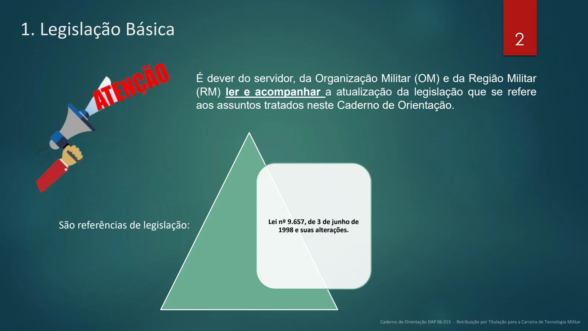
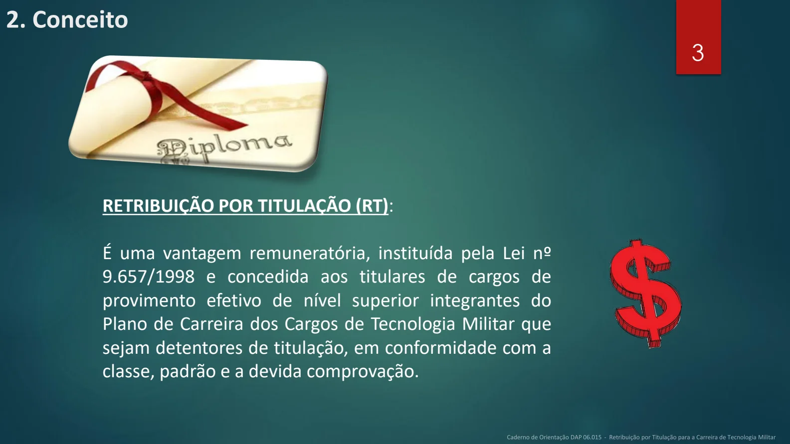
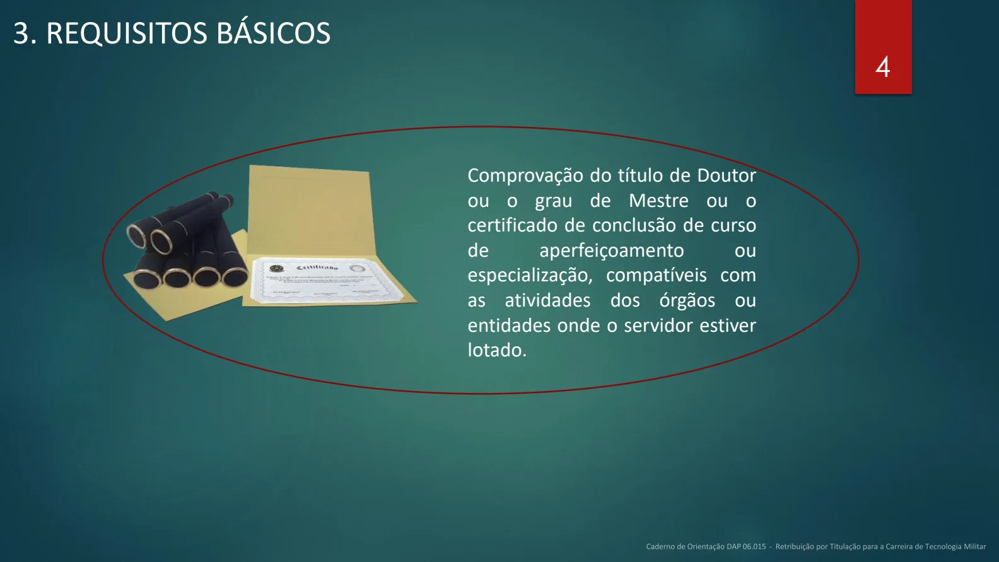
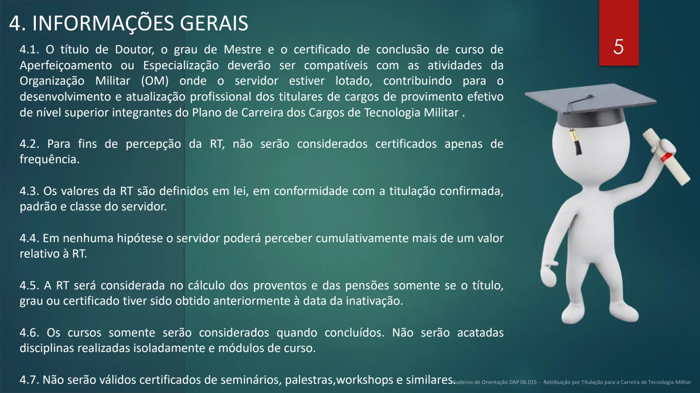
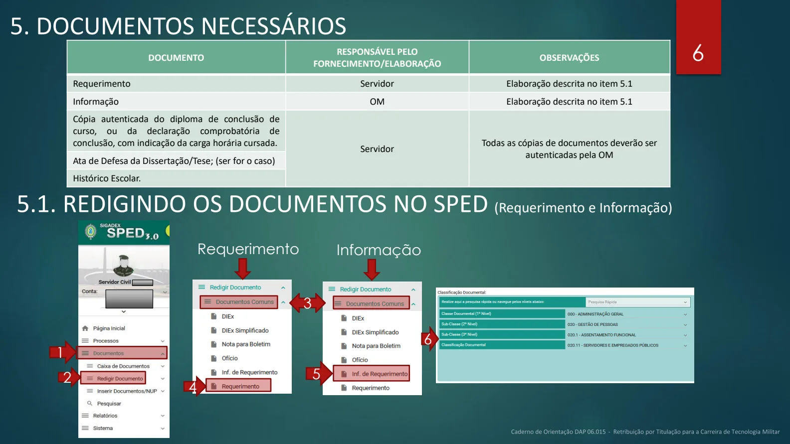
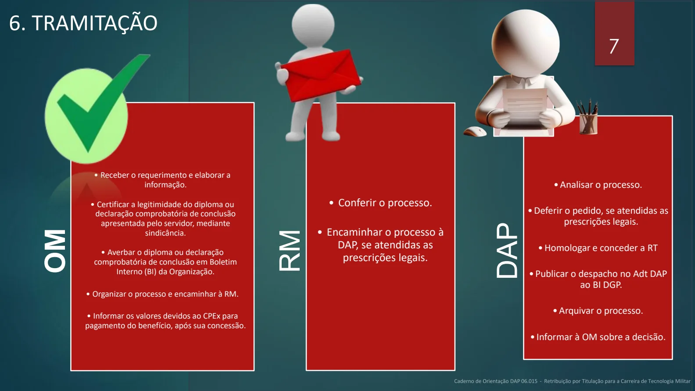
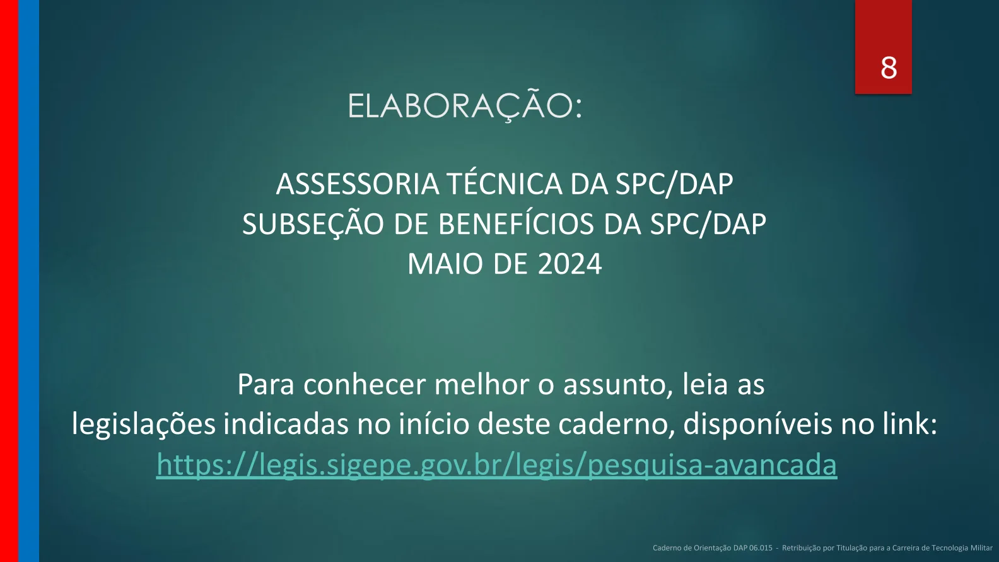

Texto extraído da edição fornecida, sem atualização normativa. Consulte a página original para conferir tabelas, formulários e instruções ilustradas. A numeração dos links corresponde à página do arquivo PDF.
Apresentação
PDF · p. 1RETRIBUIÇÃO POR TITULAÇÃO PARA A CARREIRA DE TECNOLOGIA MILITAR
DAP-06.015
Legislação básica
PDF · p. 2Lei nº 9.657, de 3 de junho de
1998 e suas alterações.
1. Legislação Básica
É dever do servidor, da Organização Militar (OM) e da Região Militar
(RM) ler e acompanhar a atualização da legislação que se refere
aos assuntos tratados neste Caderno de Orientação.
São referências de legislação:
2
Ver página original — tabelas, imagens e diagramas

Conceito
PDF · p. 32. Conceito
RETRIBUIÇÃO POR TITULAÇÃO (RT):
É uma vantagem remuneratória, instituída pela Lei nº
9.657/1998 e concedida aos titulares de cargos de
provimento efetivo de nível superior integrantes do
Plano de Carreira dos Cargos de Tecnologia Militar que
sejam detentores de titulação, em conformidade com a
classe, padrão e a devida comprovação.
Ver página original — tabelas, imagens e diagramas

Requisitos básicos
PDF · p. 43. REQUISITOS BÁSICOS
Comprovação do título de Doutor
ou o grau de Mestre ou o
certificado de conclusão de curso
de aperfeiçoamento ou
especialização, compatíveis com
as atividades dos órgãos ou
entidades onde o servidor estiver
lotado.
Ver página original — tabelas, imagens e diagramas

Informações gerais
PDF · p. 54. INFORMAÇÕES GERAIS
4.1. O título de Doutor, o grau de Mestre e o certificado de conclusão de curso de
Aperfeiçoamento ou Especialização deverão ser compatíveis com as atividades da
Organização Militar (OM) onde o servidor estiver lotado, contribuindo para o
desenvolvimento e atualização profissional dos titulares de cargos de provimento efetivo
de nível superior integrantes do Plano de Carreira dos Cargos de Tecnologia Militar .
4.2. Para fins de percepção da RT, não serão considerados certificados apenas de
frequência.
4.3. Os valores da RT são definidos em lei, em conformidade com a titulação confirmada,
padrão e classe do servidor.
4.4. Em nenhuma hipótese o servidor poderá perceber cumulativamente mais de um valor
relativo à RT.
4.5. A RT será considerada no cálculo dos proventos e das pensões somente se o título,
grau ou certificado tiver sido obtido anteriormente à data da inativação.
4.6. Os cursos somente serão considerados quando concluídos. Não serão acatadas
disciplinas realizadas isoladamente e módulos de curso.
4.7. Não serão válidos certificados de seminários, palestras,workshops e similares.
Ver página original — tabelas, imagens e diagramas

Documentos necessários
PDF · p. 65. DOCUMENTOS NECESSÁRIOS
DOCUMENTO RESPONSÁVEL PELO
FORNECIMENTO/ELABORAÇÃO OBSERVAÇÕES
Requerimento Servidor Elaboração descrita no item 5.1
Informação OM Elaboração descrita no item 5.1
Cópia autenticada do diploma de conclusão de
curso, ou da declaração comprobatória de
conclusão, com indicação da carga horária cursada. Servidor Todas as cópias de documentos deverão ser
autenticadas pela OMAta de Defesa da Dissertação/Tese; (ser for o caso)
Histórico Escolar.
5.1. REDIGINDO OS DOCUMENTOS NO SPED (Requerimento e Informação)
1
2
4
5
Requerimento Informação
3
6
Ver página original — tabelas, imagens e diagramas

Tramitação
PDF · p. 76. TRAMITAÇÃO
OM
• Receber o requerimento e elaborar a
informação.
• Certificar a legitimidade do diploma ou
declaração comprobatória de conclusão
apresentada pelo servidor, mediante
sindicância.
• Averbar o diploma ou declaração
comprobatória de conclusão em Boletim
Interno (BI) da Organização.
• Organizar o processo e encaminhar à RM.
• Informar os valores devidos ao CPEx para
pagamento do benefício, após sua concessão.
RM
• Conferir o processo.
• Encaminhar o processo à
DAP , se atendidas as
prescrições legais.
DAP
• Analisar o processo.
• Deferir o pedido, se atendidas as
prescrições legais.
• Homologar e conceder a RT
• Publicar o despacho no Adt DAP
ao BI DGP .
• Arquivar o processo.
• Informar à OM sobre a decisão.
Ver página original — tabelas, imagens e diagramas

Fontes e elaboração
PDF · p. 8ELABORAÇÃO:
ASSESSORIA TÉCNICA DA SPC/DAP
SUBSEÇÃO DE BENEFÍCIOS DA SPC/DAP
MAIO DE 2024
Para conhecer melhor o assunto, leia as
legislações indicadas no início deste caderno, disponíveis no link:
https://legis.sigepe.gov.br/legis/pesquisa-avancada
Ver página original — tabelas, imagens e diagramas
